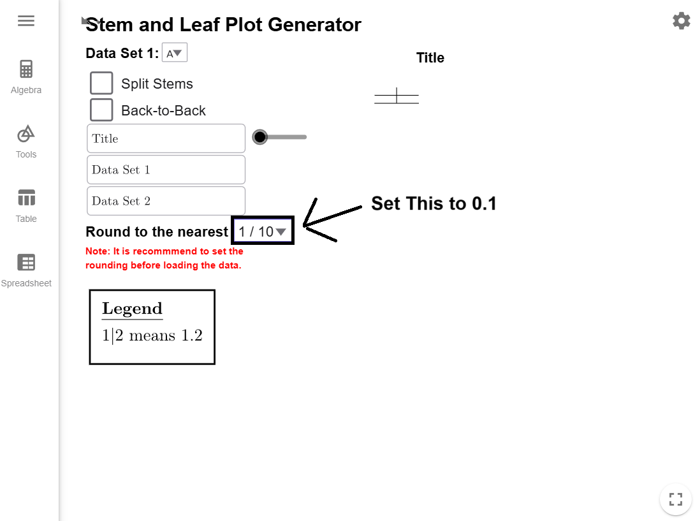
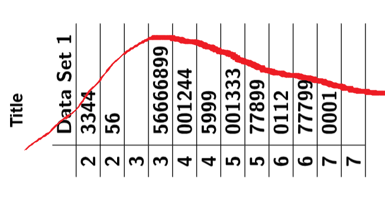

Constructing Stem-and-Leaf Plots
Stem-and-leaf plots are a simple, effective way to organize and visualize numerical data. They reveal patterns, clusters, and unusually small or large data, making them valuable for understanding distributions. This page covers how to create these plots, handle repeated values, decide on rounding, split stems for clarity, and compare datasets using back-to-back plots. Through examples and explanations, you’ll learn to master stem-and-leaf plots for various data types.
Stem-and-Leaf Plots
What is a Stem-and-Leaf Plot?
A stem-and-leaf plot is a way to organize rounded numerical data by splitting each value into a stem (the leading digit(s), such as tens) and a leaf (the trailing digit(s), based on the chosen rounding level). For example, if the dataset includes \(32\), \(35\), and \(41\), rounded to the nearest one, the plot would look like: \[ \begin{align*} 3 &\mid 2 \ 5 \ 4 &\mid 1 \end{align*} \] Here, the stem represents the tens, and the leaf represents the ones. The leaf represents the level of rounding, allowing the plot to effectively display and organize data
What if I have two or more data point with the same value?
If the same value shows up more than once in a dataset, it will get a leaf for each time it appears. If we change our example to \(32\), \(35\), \(35\), \(41\), the plot would look like \[ \begin{align*} 3 &\mid 2 \ 5 \ 5 \ 4 &\mid 1 \end{align*} \] and the two 5's represent the fact that 35 showed up twice in the data.
Where should I round my data?
There is a bit of an art to deciding how to create a stem-and-leaf plot. The best stems are those that appear frequently in your data and group it meaningfully.
For example, if most of your data falls between 300 and 340, you are likely to have many numbers in the ranges 300–309, 310–319, 320–329, and 330–339. In this case, 30, 31, 32, and 33 would be good choices for stems, and the one’s digit would make a good leaf.
On the other hand, if most of your data ranges from 500 to 900, you will likely see many numbers in the broader ranges 500–599, 600–699, 700–799, and 800–899. In this case, 5, 6, 7, and 8 would be better choices for stems. By rounding to the nearest 10, the tens digit becomes your leaf.
The goal is to create a plot that organizes the data clearly and effectively, without being cluttered or too sparse.
Too Clustered
Good Balance of Leaves
Too Spread Out
The following dataset represents the monthly average rainfall (in mm) for a Midwestern town from
2018 to 2022. Construct a stem-and-leaf plot for the data, and describe the shape of the
distribution.
| Month (2018) | Rainfall (mm) | Month (2019) | Rainfall (mm) | Month (2020) | Rainfall (mm) | Month (2021) | Rainfall (mm) | Month (2022) | Rainfall (mm) |
|---|---|---|---|---|---|---|---|---|---|
| January | 32 | January | 36 | January | 31 | January | 34 | January | 33 |
| February | 46 | February | 44 | February | 47 | February | 48 | February | 45 |
| March | 53 | March | 50 | March | 54 | March | 52 | March | 51 |
| April | 67 | April | 69 | April | 65 | April | 68 | April | 70 |
| May | 41 | May | 45 | May | 43 | May | 42 | May | 40 |
| June | 78 | June | 80 | June | 74 | June | 79 | June | 77 |
| July | 35 | July | 38 | July | 37 | July | 36 | July | 34 |
| August | 64 | August | 63 | August | 66 | August | 62 | August | 65 |
| September | 52 | September | 55 | September | 50 | September | 53 | September | 54 |
| October | 90 | October | 87 | October | 88 | October | 89 | October | 91 |
| November | 48 | November | 50 | November | 49 | November | 47 | November | 46 |
| December | 73 | December | 76 | December | 72 | December | 75 | December | 74 |
Solution
To keep the Stem-and-Leaf Plot Generator running smoothly, it is important to
determine the stems and leaves before starting. Since our data ranges from 31 to 91, the
most logical choice is to use the tens digit as the stem and the ones digit as the leaf. Set
the tool’s rounding to 1,
copy the
dataset to your clipboard, and load it into the Stem-and-Leaf
Plot Generator, which will automatically create the plot for you.
The stem-and-leaf plot reveals the shape of the data distribution. Like a histogram, the
lengths of the stems show the data’s shape. By rotating the plot \(90^\circ\)
counterclockwise, you can visualize the distribution over the tops of the bars. In this
case, the plot shows a normal distribution.
Split Stems
What does it mean to split a stem?
To split stems in a stem-and-leaf plot means dividing each stem into smaller groups to spread out the data and make the plot easier to interpret. This is useful when a single stem contains too many leaves, resulting in a cluttered display. Splitting the stem divides it into two rows. The first row contains numbers where the rounded digit is between \(0\) and \(4\), and the second row includes numbers where the rounded digit is between \(5\) and \(9\).
For example, if the dataset includes \(32, 34, 35, 36, 37, 38, 39\), a traditional plot would use \(3\) as the stem with all leaves grouped together: \[ 3 \mid 2 \ 4 \ 5 \ 6 \ 7 \ 8 \ 9 \] The split plot would look like this: \[ \begin{align*} 3 &\mid 2 \ 4 \\ 3 &\mid 5 \ 6 \ 7 \ 8 \ 9 \end{align*} \] In this example, \(32\) and \(34\) are placed in the first row because their ones digits are \(2\) and \(4\). Numbers \(35, 36, 37, 38, 39\) are placed in the second row because their ones digits are \(5, 6, 7, 8, 9\). This method provides a clearer view of the data’s distribution by reducing overcrowding.
When should I split my stems?
You should split stems in a stem-and-leaf plot when...
- a single stem has too many leaves, making the plot crowded and difficult to read.
- precision matters, such as with decimal data or closely spaced values.
- one stem has significantly more leaves than others.
Whenever the plot feels cluttered or unbalanced, splitting stems is an effective way to make it clearer and more meaningful.
Example 2
The following dataset represents the weights (in kilograms) of items in a shipment. Explain why
you should split the stems, and then construct a stem-and-leaf plot with split stems. Describe
the shape of the distribution.
| Weight (kg) | ||
|---|---|---|
| 2.34 | 2.42 | 2.30 |
| 2.48 | 2.56 | 2.44 |
| 3.57 | 3.63 | 3.50 |
| 3.62 | 3.75 | 3.60 |
| 3.94 | 3.98 | 3.92 |
| 4.02 | 4.18 | 4.05 |
| 4.37 | 4.51 | 4.40 |
| 4.89 | 4.93 | 4.85 |
| 5.01 | 5.08 | 5.02 |
| 5.26 | 5.31 | 5.25 |
| 5.74 | 5.81 | 5.71 |
| 5.93 | 6.02 | 5.90 |
| 6.14 | 6.24 | 6.11 |
| 6.68 | 6.72 | 6.65 |
| 6.91 | 6.95 | 6.90 |
| 7.02 | 7.13 | 7.03 |
Solution
To keep the Stem-and-Leaf Plot Generator running smoothly, it is important to
determine the stems and leaves before starting. Since our data ranges from about 2.3 to 7.1,
the most logical choice is to use the ones digit as the stem and the first decimal place as
the leaf. Set the tool’s rounding to 0.01,

copy the dataset to your clipboard, and load it into the Stem-and-Leaf
Plot Generator, which will automatically create the basic plot for you.
Click on the Split Stems checkbox to expand the stem-and-leaf plot.
By rotating the plot \(90^\circ\) counterclockwise, you can visualize the distribution over the tops of the bars. In this case, the plot shows a skew-right distribution.

Back-to-Back Plots
If we want to compare two sets of data, we can make a back-to-back stem-and-leaf plot. In this setup, the stems will be up the middle. The leaves of the first dataset are to the right of the stems. The leaves of the second dataset appear to the left of the stems, written in reverse order for comparison. Back-to-back stem-and-leaf plots may have split stems.
In the example below, notice how the stems are shared between the datasets, with leaves for one dataset on the right and leaves for the other on the left.
Example 3
The following datasets represent the ages of participants in two different training programs.
- Part A: Create a Stem-and-Leaf Plot and compare the shapes of the two distributions.
- Part B: Split the stems and compare the shapes again. Then compare this stem-and-leaf plot to the original one and explain how splitting the stems gives you a more detailed view of the distribution of both datasets.
| Age (Program A) | Age (Program B) | ||
|---|---|---|---|
| 20.5 | 40.1 | 22.4 | 43.7 |
| 23.6 | 43.5 | 27.3 | 45.2 |
| 25.4 | 46.9 | 29.8 | 47.8 |
| 26.9 | 51.4 | 31.6 | 50.3 |
| 28.1 | 57.3 | 33.5 | 54.9 |
| 29.2 | 62.8 | 35.2 | 59.2 |
| 30.5 | 31.1 | 36.8 | 63.4 |
| 31.1 | 31.9 | 38.6 | 34.6 |
| 31.9 | 32.7 | 40.7 | 36.9 |
| 32.7 | 33.5 | 35.6 | 42.1 |
Solution
Part A
To keep the Stem-and-Leaf Plot Generator running smoothly, it is important to determine the stems and leaves before starting. Since our data ranges from about 20.5 to 63.4, there would be too much variation in the stems used the data rounded to the first decimal place. The most logical choice is to use the tens digit as the stem and the ones digit as the leaf since this will only give us leaves from 2 to 6. Set the tool’s rounding to 1,
copy the dataset to your clipboard, and load it into the Stem-and-Leaf
Plot Generator, which will automatically create the basic plot for you.
Clicking the Back-to-Back checkbox creates the desired stem-and-leaf
plot.
If we look at the distribution of both programs, they appear to be roughly normal with a few higher values.
Part B
Clicking on the Split Stems checkbox will update
the stem-and-leaf plot.
Program A looks roughly normal with a few unusually high values, but Program B starts to show
a skew to the right.
While it was clear from the original back-to-back plot that we had values clusters in the thirties, what wasn't clear was how much more extra data we had on the high end in Program B until we split the stems.
Conclusion
Stem-and-leaf plots are a powerful tool for organizing data and identifying patterns. By learning to construct, interpret, and refine these plots using techniques like splitting stems and back-to-back comparisons, you can effectively analyze and communicate data insights.